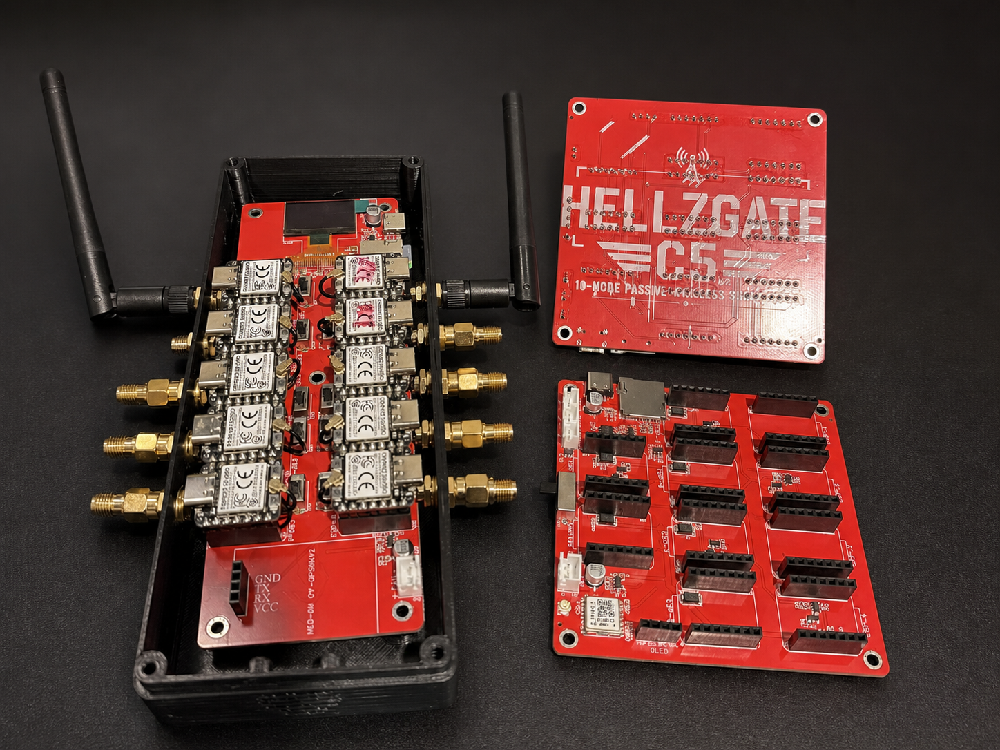

A purpose-built, standalone wireless survey platform developed from real field prototypes. Ten removable ESP32-C5 modules, local logging and onboard GNSS support—no required subscriptions, cloud service or account.
FullGate is the first planned HellzGate product. The schematic, PCB layout, routing, and manufacturing preparation are complete. Five validation boards are awaiting arrival. Standalone firmware testing and production-board integration are next.
App work is paused while the standalone firmware baseline is stabilized. FullGate is intended to remain useful without the app. Follow the build on Discord.
All 20 scanners stayed UP during the latest approximately ten-minute timed bench window: 23,580 additional observation records across 13,782 frames. There were no new reported lost frames, overflow, dropouts, or restarts; one new duplicate indication; and zero bad-CRC, bad-field, or table-full errors.
These are timed-window results, not cumulative startup counters or unique-device counts. Different antenna types and unequal observation loads were used. This demonstrates the bench setup—not maximum RF capacity or complete field validation. FullGate still has nine physical scanner slots.
Future exploration: Multigating would link independently powered FullGates wirelessly through their local masters to a central collector. This is exploratory, not an implemented feature. MiniGate remains a later direction.
HellzGate C5 FullGate is a flexible, multi-node wireless research platform. One master coordinates nine removable ESP32-C5 nodes, with local GNSS support and microSD logging. The initial HellzGate firmware centers on passive Wi-Fi and Bluetooth observation while the hardware provides a foundation for education, research and authorized testing. No required cloud account and no required subscription.
USB-C PD and external 4S lithium-ion battery inputs. Power validation is pending.
2.4 & 5 GHz.
Bluetooth LE scanning.
Onboard positioning support.
One master and nine removable scanner nodes.
HellzGate didn't start in a lab. It started as an itch — I wanted to actually see the wireless world around me, and one little radio was never going to be enough. So I sketched a box full of them and started building. Here's how it went.
What if instead of one radio sniffing the air, I had a whole cluster of them working together — each one on its own channel, all reporting back to one place? One radio shows you a keyhole. I wanted the whole door.
It started as a scribble — a rectangle, a row of little boxes for the nodes, arrows pointing to a "brain," and a screen on the front. That doodle is basically the layout the board still uses today. Sometimes the dumb-looking sketch is the whole plan.
Next came the sprawling prototype — a pile of modules, a spider-web of jumper wires, and way more nodes than any breadboard should hold. Ugly, held together by stubbornness, but it worked. It proved the whole idea: a master herding a bank of nodes really could scan wide and log clean.
The first custom carrier turned the prototype into real hardware and exposed the engineering work the production platform needed. That original design is now retired; the lessons from it are feeding the current board.
The firmware foundation runs on real ESP32-C5 hardware. Native I²C has carried live observation records in bench tests. FullGate design and routing are complete, and five validation boards are awaiting arrival.
Next comes standalone firmware verification, PCB inspection and power checks, full-system testing on external power, battery testing, and field validation. MiniGate remains a future compact direction after FullGate is established.

V1 and V2 were working engineering platforms used to prove the multi-node concept and uncover the power, communication, integration and mechanical lessons informing HellzGate C5 FullGate. These are the real boards that helped move the project from an idea toward a production-ready design.
FullGate is our first official HellzGate C5 release. Earlier boards were field-testing prototypes and will not be sold. When FullGate is validated and ready to ship, this is where you will find it.
The Core Board is the foundation for a ten-module wireless research system—not a complete ready-to-use kit. XIAO modules, antennas, display, fan, power supply, battery, and enclosure are separate. The standalone firmware focuses on observation and local logging; full production-board testing remains ahead.
A smaller HellzGate C5 platform planned for future development. Final features, specifications and release timing will be announced after FullGate hardware and firmware validation.